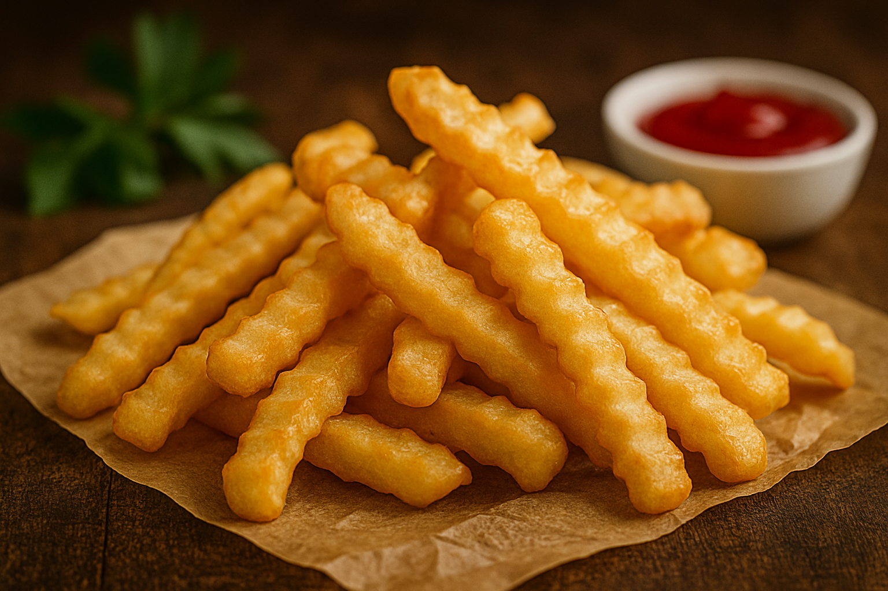

fries

ingredients
- Potatoes
- Vegetable oil
- Salt
- Pepper (optional)
- Ketchup (optional)
directions
- Peel & Cut Potatoes: Slice into thin sticks.
- Soak: Place in cold water for 30 mins (removes starch, makes them crispier).
- Dry: Pat dry with paper towels.
- Heat Oil: In a deep pan or fryer, heat oil to 350°F (175°C).
- Fry Once: Cook until soft but not brown (3–4 mins). Remove.
- Cool & Fry Again: Let fries rest for 10 mins, then fry again until golden & crispy.
- Season: Add salt while hot. Serve.